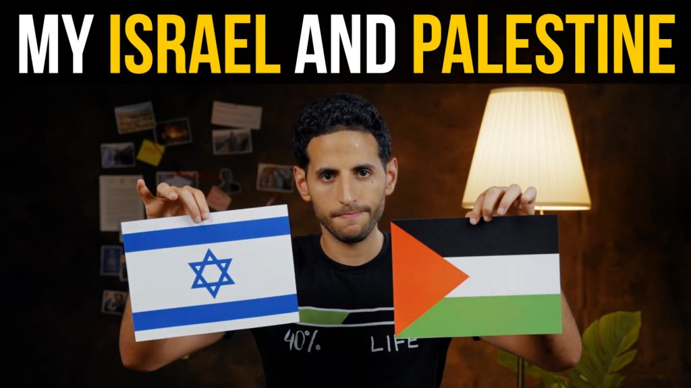

Group 7
About Page
Article
Map & Infographic
About Us
Vision & Mission
Statistic
Media Centre
Photo Galleries
Videos in Gaza
Update News
Service
Donation
Merchandise
Event
Volunteer
Collaboration
Resources
Films
Leaflets
Petition
Articles
KENAPA ISRAEL TERLALU MEMBENCI RAKYAT PALESTIN?
Sejarah hitam Palestin ditindas Zionis Israel laknatullah
Adakah Arab Saudi Akan Menormalisasikan Hubungan Dengan Israel?

Melawan Naratif Normalisasi Penjajah Oleh NasDaily
Persediaan Politik: 4 Hadis Rasulullah SAW Yang Tidak Membenarkan Ziarah Ke Baitul Maqdis
Ratu Elizabeth II Mangkat; Satu Komentar Hubungan Keluarga Diraja British dan Israel